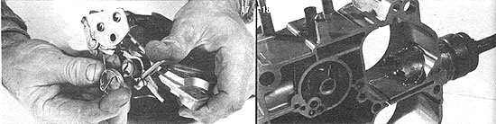

[17] remove the secondary linkage assembly from the throttle body. [18] Using a 1-1/2"" hole saw with a 1/4"" pilot bit, carefully drill into the rear wall of the carburetor's main body until the saw penetrates the divider between the two rear barrels to a depth of one inch. (The pilot bit should be set to bore no farther than the mounting slot for the secondary baffle . . . and the cut should be centered both horizontally and vertically.)